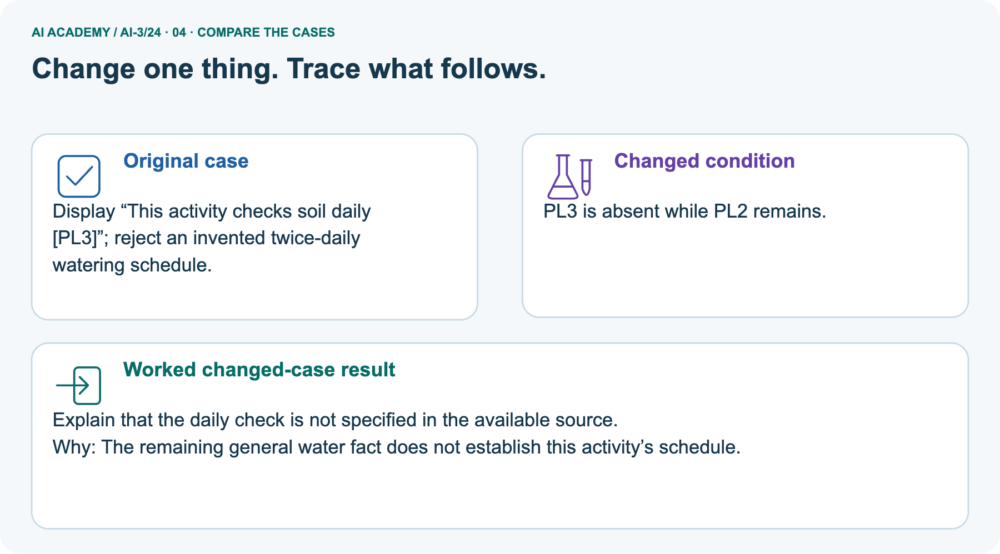
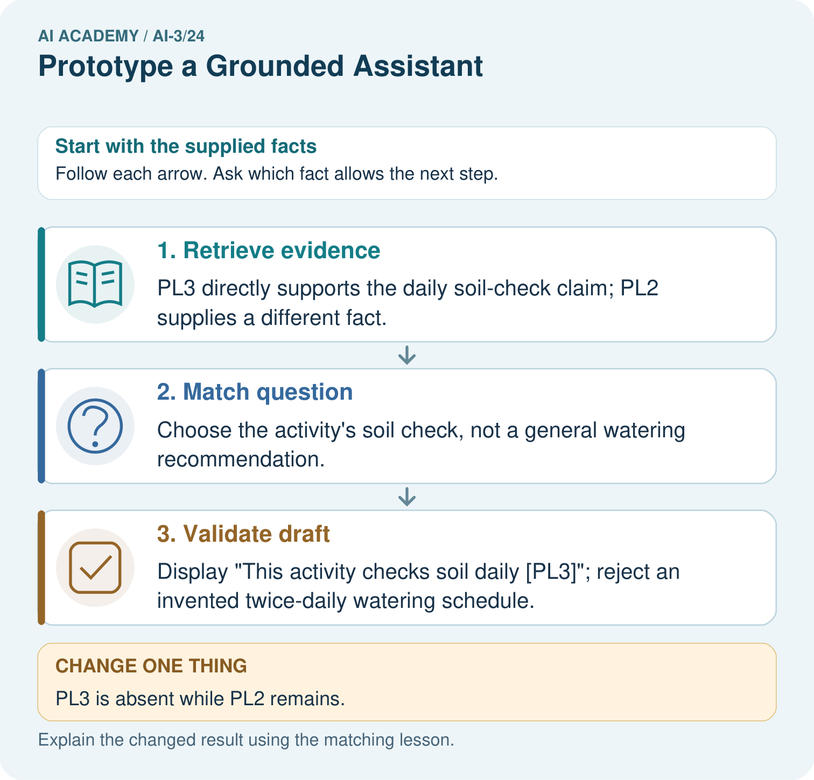
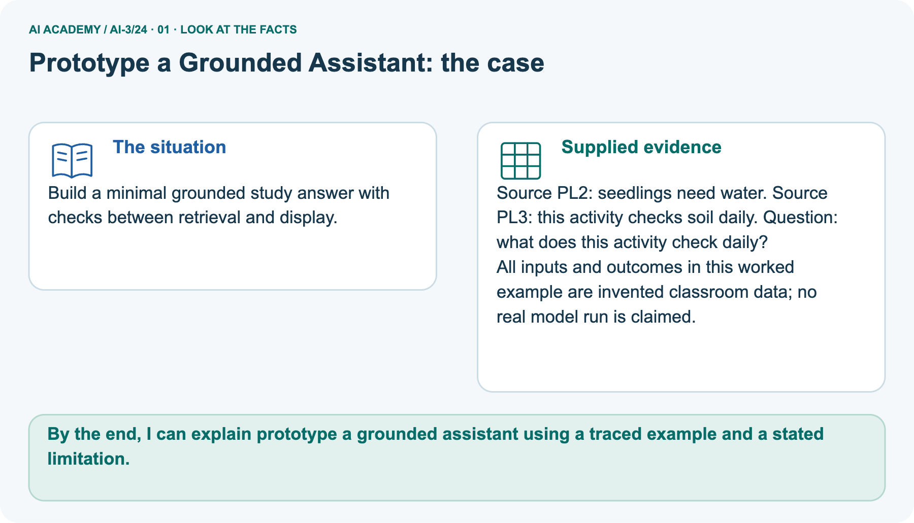
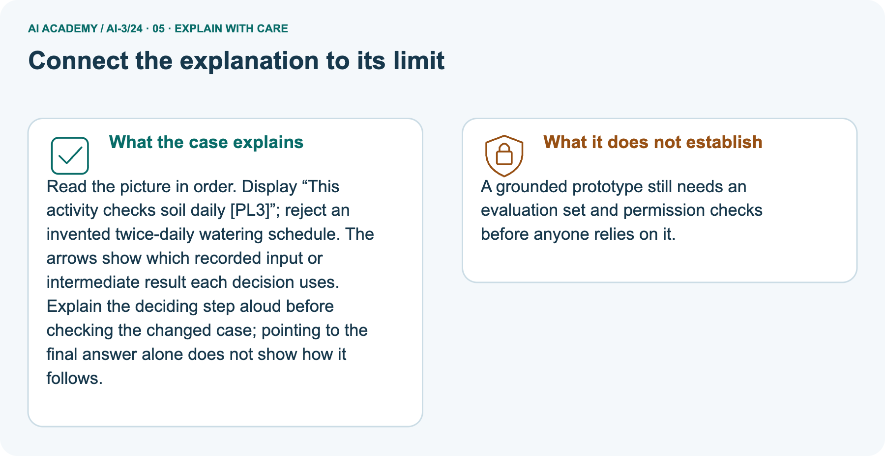
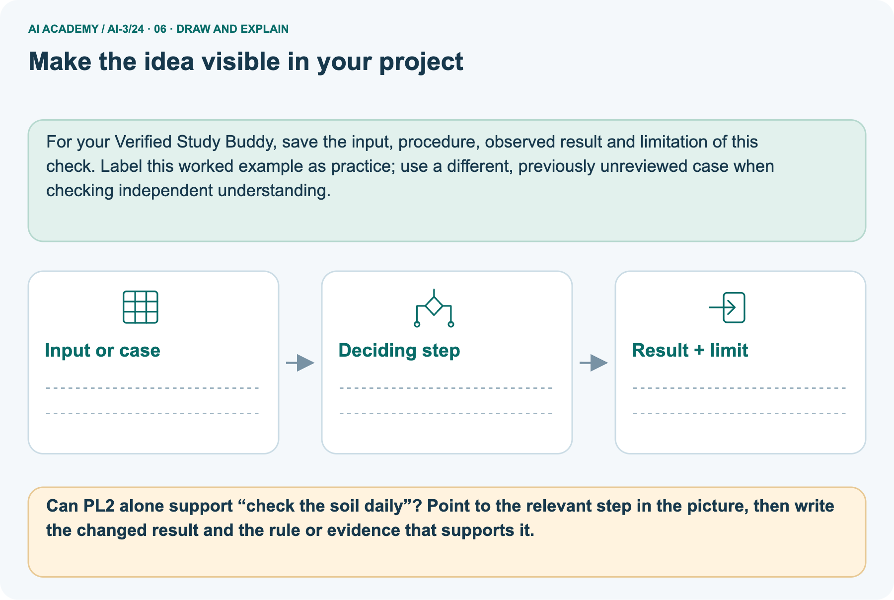

AI Academy · Level 3 · Grade 8 · Week 24 · Student lesson
Prototype a Grounded Assistant
Learn to understand, design, build, test and explain AI systems responsibly.
Project: Verified Study Buddy
THE CONNECTED WEEK
Expose the stages. Trace the evidence. Repair the first failure.
Build a minimal grounded prototype with a visible supported path and honest fallback.
Keep one habit: Plant contract → source-to-claim trace → five development cases → stage diagnosis → independent zero capacity.
Main lesson · Section 1
Can one complete path show where an answer came from?
Build a small inspectable prototype with a clear missing-answer route.
Your learning goals
I can explain the mechanism and terminology of capstone grounded assistant.
I can apply the stated procedure to a new case with a traceable result.
I can identify an assumption or limitation and design a revealing follow-up.
Recall need, baseline and evidence
Close your notes first. A rough first answer helps us choose the right starting point; it is not a score for your ability.
Recall User Need and AI Contribution: define a bounded user task, permitted corpus and simpler baseline. A prototype should expose each stage rather than hide failures behind fluent wording.
Your end goal
By the end, I can explain prototype a grounded assistant using a traced example and a stated limitation.
Earlier wording, alternatives and picture transcripts
Your learning target
Remember before reading
Without opening the old lesson, explain one key idea from Block to Python Bridge. Give an example and a mistake that the idea helps you avoid.
Without opening the old lesson, explain one key idea from Tools and APIs. Give an example and a mistake that the idea helps you avoid.
Without opening the old lesson, explain one key idea from Retrieval Augmented Generation. Give an example and a mistake that the idea helps you avoid.
After trying, check the relevant lesson or ask your teacher. Change the part of your explanation that the evidence shows was wrong.
Week 24: Prototype a Grounded Assistant
A smallest working product connects prompt, references, interaction, and output.

CREATOR MISSION
Build one end-to-end Study Buddy path.
Creator name and date:
Readiness for the connected explanation
This week’s end goal
Main lesson · Section 2
Build stages you can inspect separately
Source selection and correct use can fail independently.
Understand the minimum prototype
A prototype is a small working representation of a proposed service. This week’s minimum path is question → eligible evidence → answerability → draft → checked output. Answerability asks whether the available sources support the requested fact. A paper prototype is valid practice when its intermediate records are visible; label it as a simulation rather than a deployed or tested AI service.
First make one supported and one unsupported path understandable before adding features.
Build the assistant as a sequence of testable stages: validate request, retrieve authorised evidence, decide answerability, draft, validate and return. Avoid merging all errors into one model score.
Use supplied fictional inputs
Begin by writing the question the procedure is intended to answer. Identify the information already supplied, the information it will produce and the information still missing.
These are constructed classroom examples; they do not require live accounts, private records or an external service. Do not treat a plausible explanation as a measured outcome.
Earlier wording, alternatives and picture transcripts
PICTURE STORY
Notice → Predict → Explain
Begin with visible evidence. Do not explain more than the picture and information support.
MYSTERY
The learners must use prototype a grounded assistant to solve a problem. What information do they have? What decision or calculation do they make? What would count as evidence that it worked?
Three observations (what you can point to):
My prediction and the clue supporting it:
A closer explanation
Main lesson · Section 3
State success and fallback before drafting
The plant answer and the separate room exercise use different fields.
The complete plant prototype contract
| Prototype contract | Declared classroom behavior |
|---|---|
| Question scope | Ask what the supplied plant activity checks daily |
| Permitted corpus | PL2-v1: seedlings need water. PL3-v1: this activity checks soil daily. Both supplied public/current for this exercise. |
| Supported output | status=supported; answer=This activity checks soil daily; source_ids=[PL3-v1] |
| Missing/ambiguous output | status=needs_review; answer=null; list examined eligible source IDs and state the gap |
| Draft validation | Exact expected fields/types and claim support; reject additional unsupported schedules |
| Action boundary | Read-only study answer; no watering, ordering, booking or personal records |
| Failure reporting | Name the first stage that lacks evidence or violates the contract; keep the original draft for audit |
Separate room-approval contract
A supported response requires current matching approval and register records. Any retrieval or validation failure gives needs_review with null claims. The classroom implementation performs no booking or external action.
Respect missing-input limits
Before applying the procedure, write its units, denominator or decision boundary where relevant. A partner should be able to repeat each step using the same inputs.
If a required input is absent or violates the stated contract, record that condition explicitly instead of quietly replacing it with a convenient value.
Explain the deciding check
Point to the input, the deciding step and the result in this week’s visual. Explain the same step in ordinary words. A picture helps when you can say what each part represents.
Earlier wording, alternatives and picture transcripts
VISUAL MECHANISM
Input → Process → Output
Trace the information. At each stage, ask what changed and how you could test it.

↓

↓

Which stage could fail even when the other two are correct? Explain:
A closer explanation
Capstone grounded assistant — evidence trace
Connect the picture and the explanation
Main lesson · Section 4
Compare a supported path with a missing-answer path
One working example does not establish reliability across failures.
Four pictures with a purpose

Normal case: predict the result and deciding evidence.

Boundary case: identify the exact limit.

Missing information: name what must be clarified.

Transfer case: explain which procedure still applies.
Choose a revealing case
Which case is most likely to reveal a hidden assumption? Why?
Predict the supplied changed case
Change: PL3 is absent while PL2 remains.
Check after predicting
Prediction: Explain that the daily check is not specified in the available source.
Reason: The remaining general water fact does not establish this activity’s schedule.
Earlier wording, alternatives and picture transcripts
CASE GALLERY
Four Tests, Four Kinds of Evidence
A system is not understood until it survives more than one comfortable example.
NORMAL CASE: predict and name evidence. BOUNDARY CASE: predict and name evidence.
MISSING INFORMATION: predict and name evidence. TRANSFER CASE: predict and name evidence.
Change one thing in the pictured case
Main lesson · Section 6
Trace the daily-check answer to PL3
PL2’s general water fact cannot replace the missing schedule source.
Read the complete source pair and question
Build a minimal grounded study answer with checks between retrieval and display.
Source PL2: seedlings need water. Source PL3: this activity checks soil daily. Question: what does this activity check daily?
All inputs and outcomes in this worked example are invented classroom data; no real model run is claimed.
Trace retrieval, question match and draft check
![Retrieve evidence: PL3 directly supports the daily soil-check claim; PL2 supplies a different fact. → Match question: Choose the activity’s soil check, not a general watering recommendation. → Validate draft: Display “This activity checks soil daily [PL3]”; reject an invented twice-daily watering schedule.](../assets/academy-story-ai-3-24-02.png)

Read the picture one step at a time
Read the picture in order. Display “This activity checks soil daily [PL3]”; reject an invented twice-daily watering schedule. The arrows show which recorded input or intermediate result each decision uses.
Explain the deciding step aloud before checking the changed case; pointing to the final answer alone does not show how it follows.
Predict removing PL3
Change one thing: PL3 is absent while PL2 remains. Predict the result before checking the explanation. What remains the same?
Check after predicting



State remaining evaluation and permission limits
A grounded prototype still needs an evaluation set and permission checks before anyone relies on it.
Read the labelled picture: Can PL2 alone support “check the soil daily”? Point to the relevant step in the picture, then write the changed result and the rule or evidence that supports it.
Separate practice · Room B/C source mismatch
Request room B; retrieved approval names B but register names C. Draft gives capacity 10 from C.
Same-room support fails before or during semantic validation. Return needs_review with null claims; the draft capacity is unsupported for B.
Earlier wording, alternatives and picture transcripts
WORKED EVIDENCE
Reason Step by Step
Predict first. Then check each step. A correct answer without visible reasoning is incomplete evidence.

1. Input: learner question plus selected course notes.
2. Retrieve and choose a relevant passage.
3. Generate structured answer and citation; validate fields and support.
4. Missing evidence triggers ask-more or ‘not found in sources.’
Recalculate, retrace, or restate the reasoning in your own representation:
CHECK Did the evidence answer the exact question? Did the total, path, or source record stay consistent?
A closer explanation
Compare the intermediate evidence with the final statement. Explain why each number or decision follows from the stated inputs.
The conclusion belongs to this scenario and procedure; changing the inputs, evaluation population or authority can change what it establishes. Retain the raw record so a later revision can be compared honestly.
Learn from the worked case
Cover the result before checking it. Say what is given, choose the procedure, and follow one step at a time. Then uncover the result and explain your first mismatch. Ask why a step is allowed, not only what number it produces.
A pictorial worked case: Prototype a Grounded Assistant
The facts we will use



Why this result follows
What this example does not establish
Main lesson · Section 7
Find a topic match mistaken for an answer
Check the exact claim and the first failing stage.
Repair the schedule shortcut
Claim to repair: PL2 mentions water, so replace the missing daily soil-check source with a twice-daily watering answer. Topic similarity does not support the asked schedule. PL3 supports the daily soil check; PL2 does not. If PL3 is unavailable, the daily check is unverified. If a draft adds watering frequency, reject it at claim validation rather than displaying it with an unrelated citation.
Design a revealing follow-up
Earlier wording, alternatives and picture transcripts
ERROR DETECTIVE
Compare → Diagnose → Repair
Do not patch the answer. Find the earliest unsupported assumption, wrong step, or weak evidence.

| Evidence record | Expected | Actual | Likely cause / next test |
|---|---|---|---|
| normal case | works | ||
| boundary case | stated rule | ||
| missing input | safe response | ||
| fresh transfer | generalizes |
Repair one cause. Why is this repair better than changing several things?
A closer explanation
Complete the supported workbook tasks before attempting W4 independently. Record any hints or help used. After feedback, use the teacher's fresh retry rather than copying the earlier answer.
For a project, select a relevant new case, predict the outcome from the declared rule and preserve the result alongside any revision.
Main lesson · Section 8
Practise the separate room mismatch with less help
Use current matching approval and register evidence for the same requested room.
The happy-path limit
A correct happy path does not establish fallback, access control or side-effect safety.
Complete room B/C W2
Practise with less help: Trace the worked case
Use workbook W2 for the connected example “Capstone grounded assistant”. First fill the input and rule boxes. Try the middle steps before asking for a hint. After a hint, try the next step yourself.
| Plan | Do | Check |
|---|---|---|
| What is given? Which rule or procedure applies? | Record each intermediate step. | Does the result follow? What remains unknown? |
Audit a generalisation shortcut
Use the worked case for Capstone grounded assistant. Proposed explanation: “The worked result establishes every future case”. Decide whether this explanation is supported.
Point to the step or supplied fact that decides; explain your repair if needed.
Answer on your own before discussion. If you are unsure, say which step you need help with.
Check your reasoning
Explain the pictured missing schedule
Can PL2 alone support “check the soil daily”? Point to the relevant step in the picture, then write the changed result and the rule or evidence that supports it.
Explain the picture
Keep independent work separate
This is supported practice. Keep the separately named independent case for an attempt before feedback.
Earlier wording, alternatives and picture transcripts
LOGIC STUDIO
Specify Before You Run
Prompts, schemas, retrieval, tool calls, and code are inspectable parts of one AI product.

SET task, audience, constraints, output_schema LOAD approved_context or retrieval_result CALL model or allowed_tool VALIDATE fields, claims, citations, and safety IF evidence missing: ask, retrieve, or abstain RETURN useful output + source trail + limitations
Trace one input. Which line changes the state or chooses a path?
A closer explanation
A useful check asks what would make the reasoning fail. Distinguish a failure to execute the declared procedure from a weakness in the procedure itself.
The first may require a correction; the second requires an explicitly revised method and new evidence. Preserve unsuccessful cases so an improved result cannot hide the original problem.
Explain your trace to a partner. Your partner points to one step to check. Swap roles on the next case. Each person writes their own explanation.
Main lesson · Section 9
Build and test five complete prototype paths
Keep failures attributed to stages instead of one overall score.
All supplied development cards
| Complete fictional test card | Stage evidence and expected outcome |
|---|---|
| A · Normal | Daily-check question; PL2+PL3 available; draft exact supported answer with PL3-v1. Expected supported. |
| B · Missing source | Same question; only PL2 available; no schedule source. Answerability fails; needs_review/null. |
| C · Ambiguous request | Question asks What does it do? with no activity or requested fact specified. Request stage asks clarification; do not choose a convenient question. |
| D · Malformed output | A’s full sources available, but draft is text THIS IS THE ANSWER rather than the declared object. Output-structure validation fails; no accepted output. |
| E · Unsupported addition | A’s sources available; draft adds Water twice daily. Claim support fails; reject extra schedule. |
Construct the visible prototype and trace each card
Build a paper interface with a question box, source-selection record, answerability decision, draft and final validation/status. Use A to show the end-to-end supported path, then trace B–E one at a time. Write expected stage failures before checking the supplied guidance. Keep rejected drafts and observed paper transitions. A repair is a new attempt: record which stage changed and predict its effect.
No live model or retrieval engine is required. These five reviewed cases are development practice, not a hidden evaluation set or evidence of measured reliability. Keep the independent zero-capacity room case withheld.
Keep predictions, rejected drafts and repairs
| Test / input | Prediction | Actual | Evidence / calculation | Change or keep? |
|---|---|---|---|---|
| normal | ||||
| boundary | ||||
| missing | ||||
| fresh transfer |
What did the hardest test teach you that the normal test did not?
Before trying: what do I expect, and why? While trying: which step could first go wrong? Afterwards: what did I actually observe, and what should change? Keep “not run” if you only traced the procedure.
Earlier wording, alternatives and picture transcripts
EVIDENCE LAB
Predict → Test → Record → Explain
Keep expected and actual results separate. Surprises are useful data when recorded honestly.

Use the five complete plant-prototype cards for normal, missing-source, ambiguous-request, malformed-output and unsupported-addition paths. Build a paper interface or inspectable implementation; record stage failures and repairs without claiming a live AI evaluation.
Plan → try → check
Main lesson · Section 14
Try alone: trace the fresh zero-capacity room case
Distinguish a legitimate measured zero from missing evidence.
Independent records and complete room contract
Request room J; approval and register both J capacity 0. Draft is well-formed with J/0 and correct sources. Trace stages and distinguish zero from missing.
Apply the separate room contract: supported requires current matching approval and register records for the requested room, a valid nonnegative integer capacity and correctly referenced sources. Otherwise needs_review with null claims. Read-only: no booking. Use only the given independent records and draft; no new room measurement is provided.
Your first attempt and help record
Attempt this case before feedback. Record any help. Earlier examples below are further practice; a case already practised with feedback cannot establish fresh transfer.
Your teacher has the independent answer and scoring criteria. Complete the matching workbook week to keep your practice evidence together.
Use feedback afterwards
Attempt the independent case before hints. Record whether you worked alone, used a hint or followed a model. After feedback, fix the first unsupported step and explain why it changed.
A later check uses a changed case, not a copied answer.
Earlier wording, alternatives and picture transcripts
Independent case: Apply a new case independently
Week 24 Independent application
Close the worked explanation. Apply the idea to this different question without copying.
A study assistant has a supplied passage about roots. A user asks a question about planets. What should the prototype do within a passage-only boundary?
My answer, with a trace, calculation or supporting evidence
Create and test
Change one relevant detail. Predict the result before testing. Include a boundary or missing-information case when it helps reveal a limit.
My changed input and expected result
Connect to your project
Connect user interface, source store, retrieval, prompt, schema validation, and evidence display.
The evidence I will keep
Transfer practice from the original programme
Build a paper assistant from notes A='Roots take up water' and B='Leaves use light'. Answer 'Which part takes up water?' and 'How tall is this plant?' with references or fallback.
Use feedback to improve
Main lesson · Section 11
Keep the project’s prototype trace reproducible
Small visible stages make the first repair easier to choose.
This week’s contribution
For the Verified Study Buddy, keep one end-to-end trace for each supported and review path: input, eligible sources, answerability, draft, validation, displayed status and unresolved gap. Freeze a small development corpus before changing behavior. Label paper traces, code executions and model outputs separately. Preserve failed drafts so a later improvement can be checked against the original failure.
Plan fresh evaluation later; do not count debugging examples as independent success.
For your Verified Study Buddy, save the input, procedure, observed result and limitation of this check.
Label this worked example as practice; use a different, previously unreviewed case when checking independent understanding.
Retain the checkpoint and human choice
THIS WEEK’S CHECKPOINT Connect user interface, source store, retrieval, prompt, schema validation, and evidence display.
SYSTEM MAP Learner need → prompt/schema → approved sources/retrieval → model/tool → structured answer → verification → human decision
What will you add, change, or verify in the project this week?
What should remain under human control?
RESPONSIBLE DESIGN Collect only necessary information. Show uncertainty and limits. Never confuse fluent output with verified truth.
Earlier wording, alternatives and picture transcripts
CUMULATIVE PROJECT
Verified Study Buddy
Every week adds one inspectable piece. The system must show how it reached a result.

Evidence for your project
Main lesson · Section 16
Finish: name the first failing stage and the repair
A working happy path is a starting point for evaluation.
Explain without notes
Close your notes. Explain this goal in your own words: Explain the mechanism and terminology of capstone grounded assistant
Plan a changed-case return
If you are unsure, return to the worked picture and explain one arrow. If you are ready, change an input or assumption and justify your prediction.
Save your workbook evidence. At the next review, try a different case before opening your old answer.
Reference bank and extra practice
Choose the reference that helps your next step.
Your quick word guide
Reference · Section 5
Your quick word guide
Use the words to explain a particular step, record or limit.
Core vocabulary
| Word | My own example | Not this / boundary |
|---|---|---|
| prototype | An early working or simulated version used to test assumptions about a design. | |
| end-to-end | Covering the entire process from original input to final output. | |
| grounding | Connecting an answer or action to specified evidence or observations. | |
| fallback | A predefined alternative action used when the usual path cannot be completed reliably. |
Terms for the connected explanation
| Word | Meaning |
|---|---|
| Pipeline stage | One operation with defined inputs and failure handling |
| Answerability gate | A check for sufficient evidence before answering |
| Semantic validator | A check that claims match task evidence |
Earlier wording, alternatives and picture transcripts
VOCABULARY LAB
Words You Can Use to Reason
A definition matters when you can recognize the idea, use it, and contrast it with a near-miss.


Words used in the closer explanation
Choose a stronger thinking challenge
Reference · Section 10
Choose a stronger thinking challenge
Choose the next useful challenge rather than treating the whole ladder as compulsory.
Pick your next step
1 • NAME: Define the concept without repeating the textbook.
2 • TRACE: Show the information, state, branch, calculation, or evidence path.
3 • APPLY: Solve a different example independently.
4 • CHALLENGE: Find a boundary case, counterexample, or unfair outcome.
5 • EXPLAIN LIMITS: Say when the result should not be trusted or used alone.
My strongest evidence of independent understanding:
Earlier wording, alternatives and picture transcripts
MASTERY
From Knowing the Word to Owning the Idea
Move upward only when you can produce evidence without copying the worked example.

Reference: check your explanation
Reference · Section 12
Reference: check your explanation
Use after practice. Trace the new zero-capacity room response independently is the selected independent case.
Check the evidence and its limit
1. My fresh example, trace, calculation, or design:
2. My evidence that it works (include a boundary or missing-data case):
3. One limitation, fairness concern, or situation needing human review:
Self-check and record
SELF-CHECK □ I explained the mechanism □ I used evidence □ I tested a fresh case □ I named a limitation □ I can answer ‘why?’
Earlier wording, alternatives and picture transcripts
INDEPENDENT MASTERY PROOF
Checklist for explaining this week’s idea
Use after practice. Trace the new zero-capacity room response independently is the selected independent case.

EXPLANATION CHECK Require request/evidence match, answerability, structural and semantic checks, and legitimate zero handling.
Extra practice: Build the smallest grounded path
Reference · Section 13
Extra practice: Build the smallest grounded path
Try the question before opening its worked explanation.
Read the supplied case and question
Approved notes say plants need light and roots take up water. Ask how roots help.
Specify the minimum grounded path.
Your explanation
Which detail supports the answer, and why does it matter?
Check after trying
Retrieve the roots note, answer that roots take up water and reference it. Validate support and avoid unrelated claims.
| Evidence or stage | Value or result |
|---|---|
| Question | How do roots help? |
| Retrieve | Roots take up water |
| Answer | Explain water uptake |
| Check | Reference and verify the roots note |
Earlier wording, alternatives and picture transcripts
Week 24 Worked case
Use the supplied details to practise the weekly concept before attempting the independent question. This case extends the illustrated lesson.
The situation
The question
Worked explanation
Explain it in your own words
Trace the supplied case visually
Build the smallest grounded path
Approved notes say plants need light and roots take up water. Ask how roots help.
Specify the minimum grounded path.
Retrieve the roots note, answer that roots take up water and reference it. Validate support and avoid unrelated claims.
Reference: original lesson checklist
Reference · Section 15
Reference: original lesson checklist
Use an additional checklist when it helps inspect your explanation.
Targets and evidence
| By the end, I can | How I will show it |
|---|---|
| Explain the mechanism and terminology of capstone grounded assistant | Explain the deciding step, show a trace or test, and state one limit. |
| Apply the stated procedure to a new case with a traceable result | Explain the deciding step, show a trace or test, and state one limit. |
| Identify an assumption or limitation and design a revealing follow-up | Explain the deciding step, show a trace or test, and state one limit. |
Keep your route and first prediction
Remember → watch and explain → try with help → investigate → try independently → keep project evidence. Your teacher may spread this lesson across several classes.
Keep your first prediction. Compare it with what the evidence shows and explain any change.
Earlier wording, alternatives and picture transcripts
Start with this question: Build a minimal grounded study answer with checks between retrieval and display.
Extra practice: pictures, repair and feedback
Reference · Section 17
Extra practice: pictures, repair and feedback
Attempt each question before opening its explanation. Use one browser or paper copy.
First supported question
Build a minimal grounded study answer with checks between retrieval and display.
Which labelled step matches this detail? Display “This activity checks soil daily [PL3]”; reject an invented twice-daily watering schedule.
1. Retrieve evidence
2. Match question
3. Validate draft
Hint if needed: Read the steps in the pictorial case. Match the supplied detail to the stage that performs or records it.
After your attempt, compare with the supported explanation: Validate draft Display “This activity checks soil daily [PL3]”; reject an invented twice-daily watering schedule. Read the picture in order.
Display “This activity checks soil daily [PL3]”; reject an invented twice-daily watering schedule. The arrows show which recorded input or intermediate result each decision uses.
Explain the deciding step aloud before checking the changed case; pointing to the final answer alone does not show how it follows.
Practice 1: explain the deciding evidence
Check the first explanation
Practice 2: explain the deciding evidence
Changed-case question
Changed-case practice: PL3 is absent while PL2 remains. Which conclusion is supported by the supplied facts?
1. We can decide the result without examining the changed input or the procedure.
2. Explain that the daily check is not specified in the available source.
3. This one example guarantees correct results for every future input.
Hint if needed: Use the changed condition and the deciding step in the pictorial trace. The answer must say what follows from those facts.
After your attempt, compare with the supported explanation: Explain that the daily check is not specified in the available source. The remaining general water fact does not establish this activity’s schedule.
Check the changed case
Repair a missing building block
Repair and save your work
Review Block to Python Bridge (ai-3/23). Goal: Translate a short paper calculation into a Python script. Short practice: Trace the changed list and identify where the result differs.
Point to the relevant step in the picture, then write the changed result and the rule or evidence that supports it.. Return to this week and explain what you changed.
Review Tools and APIs (ai-3/21). Goal: Explain the mechanism and terminology of tools and api contracts. Short practice: Does a valid C7 ID permit the extra lending action?
Point to the relevant step in the picture, then write the changed result and the rule or evidence that supports it.. Return to this week and explain what you changed.
Review Retrieval Augmented Generation (ai-3/18). Goal: Explain the mechanism and terminology of building a grounded answer. Short practice: Which part of the source supports a two-minute melting claim?
Point to the relevant step in the picture, then write the changed result and the rule or evidence that supports it.. Return to this week and explain what you changed.
Use Download completed work in the hosted lesson to export your answers, reflections, practice feedback and code-run evidence. Open the HTML copy to read or print it.
Drafts stay in this browser when storage is available; clear drafts on a shared device.
Earlier wording, alternatives and picture transcripts
Use this supported practice once, in the browser or on paper. Keep the reserved independent assessment for a separate first attempt before teacher feedback.
Keep your completed work
Reference: the six-picture journey
Reference · Section 18
Reference: the six-picture journey
Revisit the picture that serves the current question; key diagrams already sit beside the main explanation.
01. Prototype a Grounded Assistant: the case



Build a minimal grounded study answer with checks between retrieval and display. Supplied facts: Source PL2: seedlings need water. Source PL3: this activity checks soil daily. Question: what does this activity check daily?
All inputs and outcomes in this worked example are invented classroom data; no real model run is claimed.
Point to the given fact that matters most. Explain why it matters.
02. Follow the deciding steps
Retrieve evidence: PL3 directly supports the daily soil-check claim; PL2 supplies a different fact. → Match question: Choose the activity’s soil check, not a general watering recommendation. → Validate draft: Display “This activity checks soil daily [PL3]”; reject an invented twice-daily watering schedule.
Point to each numbered stage and explain which recorded input it uses.
03. Capstone grounded assistant — evidence trace
![Capstone grounded assistant — evidence trace. Request room B; retrieved approval names B but register names C. Draft gives capacity 10 from C. | A supported response requires current matching approval and register records. Any retrieval or validation failure gives needs_review with null claims. The classroom implementation performs no booking or external action. | Same-room support fails before or during semantic validation. Return needs_review with null claims; the draft capacity is unsupported for B.](../assets/academy-story-ai-3-24-03.png)

Capstone grounded assistant — evidence trace. Request room B; retrieved approval names B but register names C. Draft gives capacity 10 from C. | A supported response requires current matching approval and register records.
Any retrieval or validation failure gives needs_review with null claims. The classroom implementation performs no booking or external action. | Same-room support fails before or during semantic validation.
Return needs_review with null claims; the draft capacity is unsupported for B.
Read the labels and values. Explain the relationship the model shows.
04. Change one thing. Trace what follows.
Original case: Display “This activity checks soil daily [PL3]”; reject an invented twice-daily watering schedule. Changed condition: PL3 is absent while PL2 remains.
Expected result: Explain that the daily check is not specified in the available source. Reason: The remaining general water fact does not establish this activity’s schedule.
Predict before checking the worked changed-case result. Name what changed and what the supplied facts allow you to conclude.
05. Connect the explanation to its limit



Read the picture in order. Display “This activity checks soil daily [PL3]”; reject an invented twice-daily watering schedule. The arrows show which recorded input or intermediate result each decision uses.
Explain the deciding step aloud before checking the changed case; pointing to the final answer alone does not show how it follows.
Limit: A grounded prototype still needs an evaluation set and permission checks before anyone relies on it.
Explain the case, then point to a limit on the claim.
06. Make the idea visible in your project



For your Verified Study Buddy, save the input, procedure, observed result and limitation of this check.
Label this worked example as practice; use a different, previously unreviewed case when checking independent understanding. Draw your input, deciding step, result and limit.
Supported question: Can PL2 alone support “check the soil daily”? Point to the relevant step in the picture, then write the changed result and the rule or evidence that supports it.
Draw your project trace and justify the deciding step using evidence.